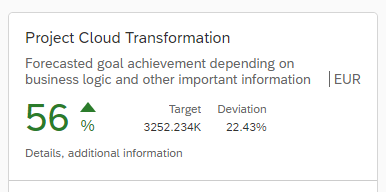

Numeric Header
The numeric header shows general information about the card and allows the configuration of a numeric value visualization. Using properties you can configure the title, subtitle, status text, and icon.
Usage
To show only basic information, use the default header instead. You should always set a title. Optionally, you can add a maximum of two side indicators that relate to the main numeric indicator.
Properties
| Property | Type | Required | Description | Schema Version |
|---|---|---|---|---|
| type | string | Yes | Represents the type of the header. | 1.14.0 |
| title | string | Yes | Represents language-dependent title. | 1.14.0 |
| subTitle | string | No | Represents language-dependent additional information to the title. | 1.14.0 |
| actions | array | No | Represents description of the actions that can be applied on a part of a card. | 1.15.0 |
| unitOfMeasurement | string | No | Represents unit of measurement for the whole numeric header. | 1.14.0 |
| mainIndicator | No | 1.14.0 | ||
| details | string | No | Represents additional information about the numeric header. | 1.14.0 |
| sideIndicators | string | array | Side indicators that relate to the main numeric indicator. You can have a maximum of two side indicators. | 1.14.0 |
| status | No | Represents the status of the card. | 1.14.0 |
Events
| Event | Description |
|---|---|
| press | Fires when the user presses the control. |
Example
"header": {
"type": "Numeric",
"title": "Project Cloud Transformation",
"subTitle": "Revenue",
"unitOfMeasurement": "EUR",
"mainIndicator": {
"number": "44",
"unit": "%",
"trend": "Down",
"state": "Critical"
},
"details": "Some details",
"sideIndicators": [
{
"title": "Target",
"number": "17",
"unit": "%"
},
{
"title": "Deviation",
"number": "5",
"unit": "%"
}
]
}
Try It Out
Actions
Actions add behavior to the card. To add a navigation action to the header and to the items, you can configure it inside the manifest.